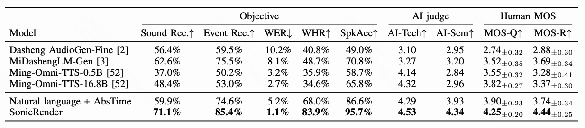
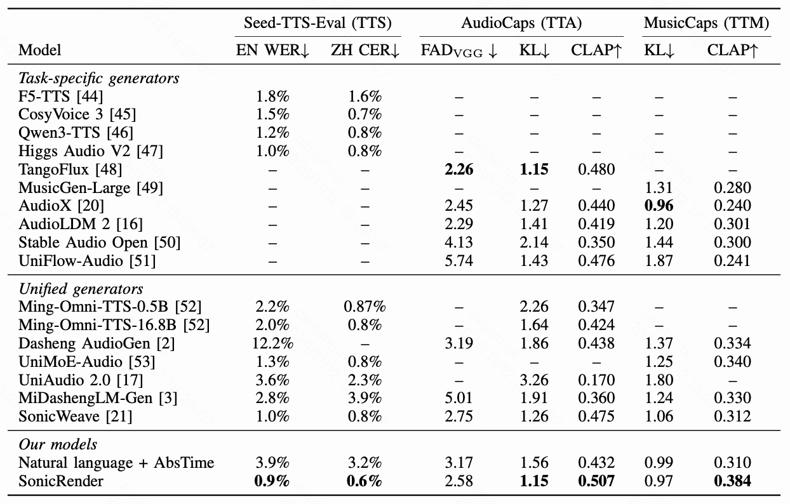
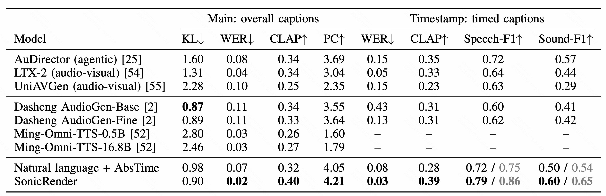

Complex scenes
Multi-speaker dialogue, evolving music, sound effects and ambience, from short exchanges to long-form scenes.
Dialects & languages
Regional Chinese speech, English accents and six additional languages, with full descriptions and original utterances.
SceneMix comparison
Choose a scene and listen across models. Seven matched examples with repeated speakers and overlapping events.
View SceneMix results

Public benchmarks
Selected examples of speech, general audio, music and timestamped mixtures.
Headphones recommended
View quantitative results

